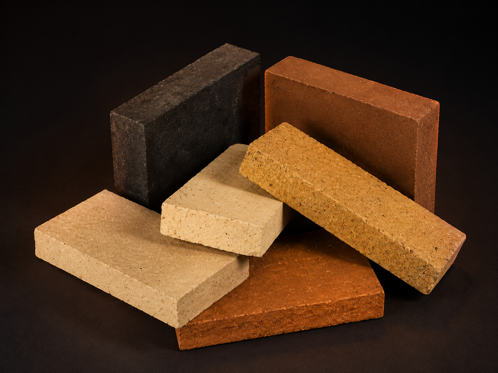
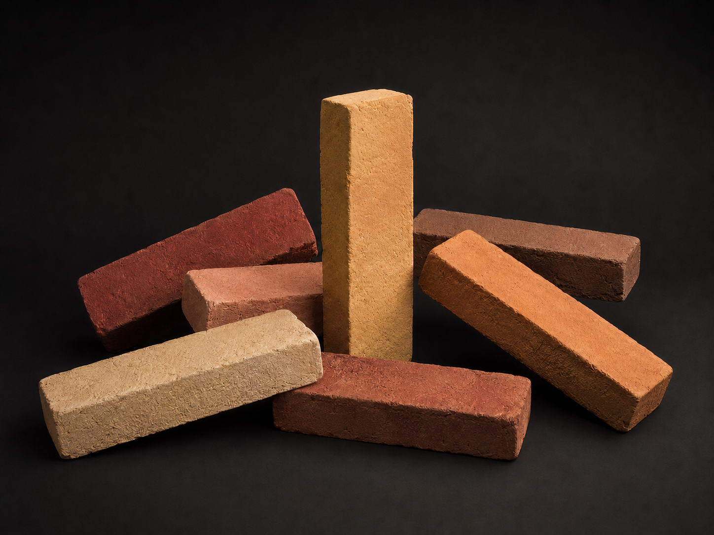
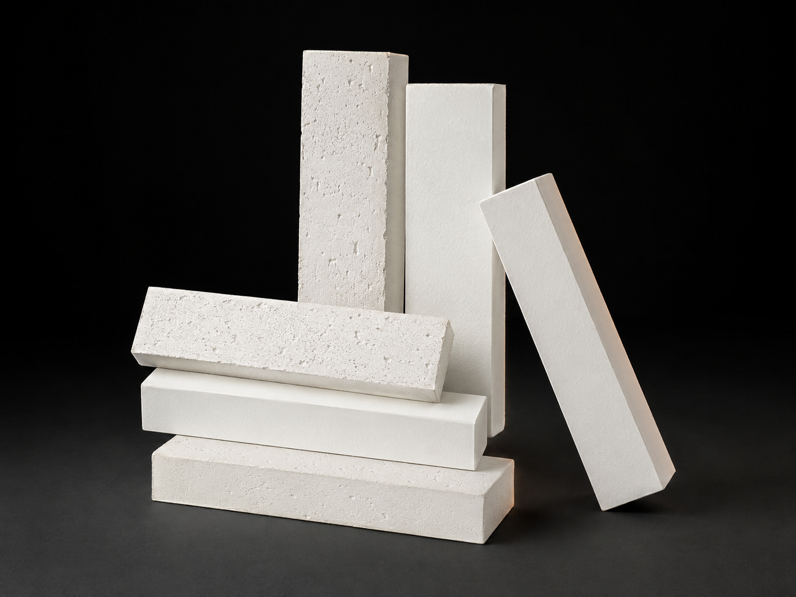
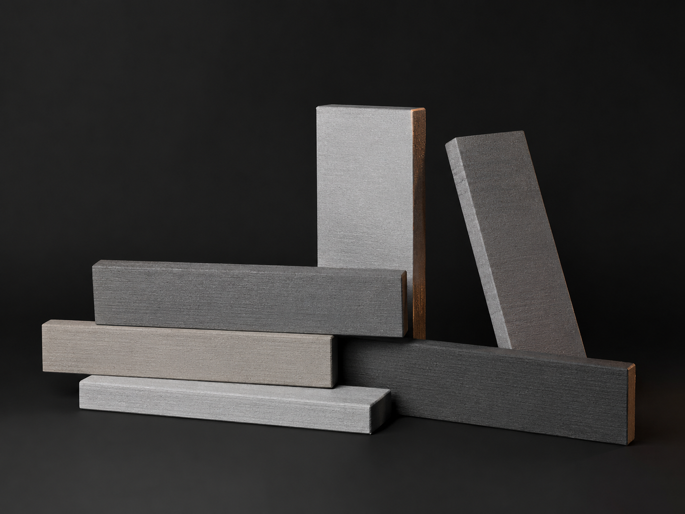
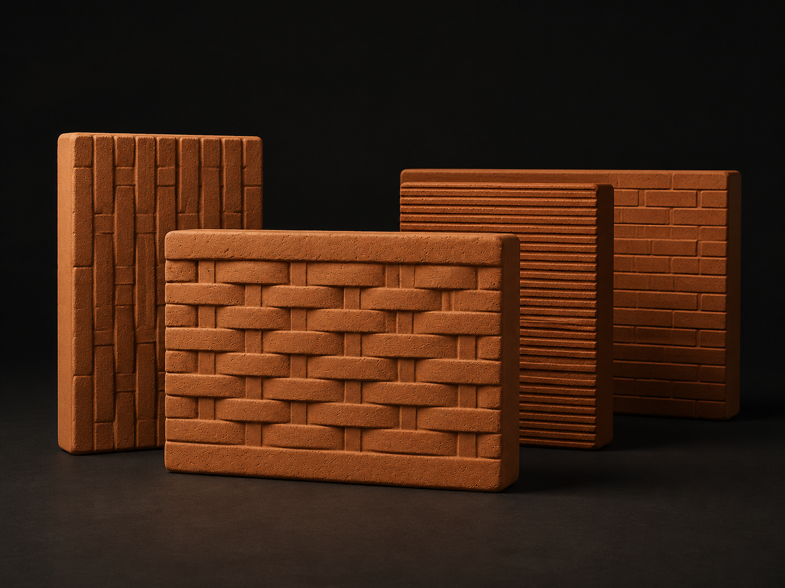
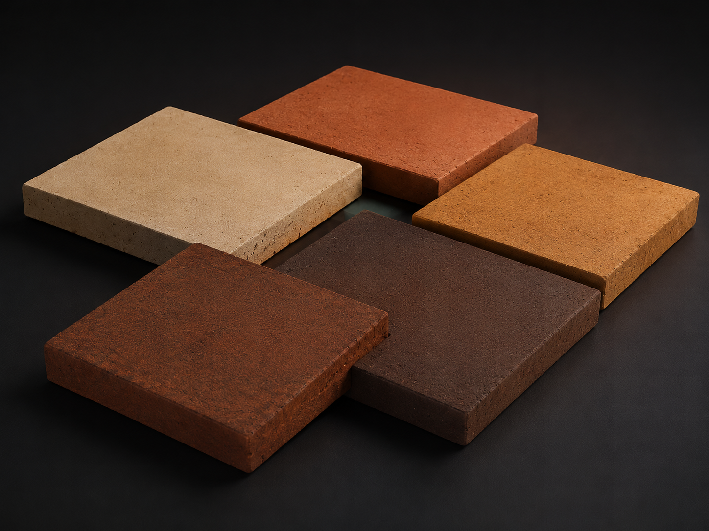
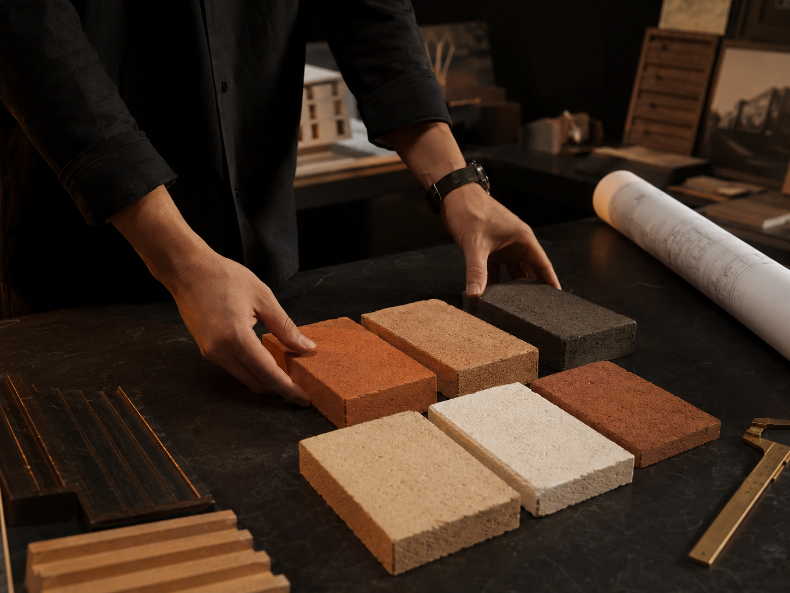
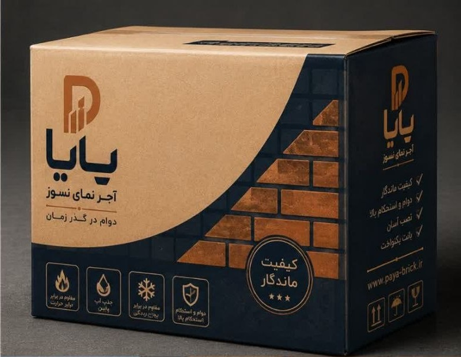
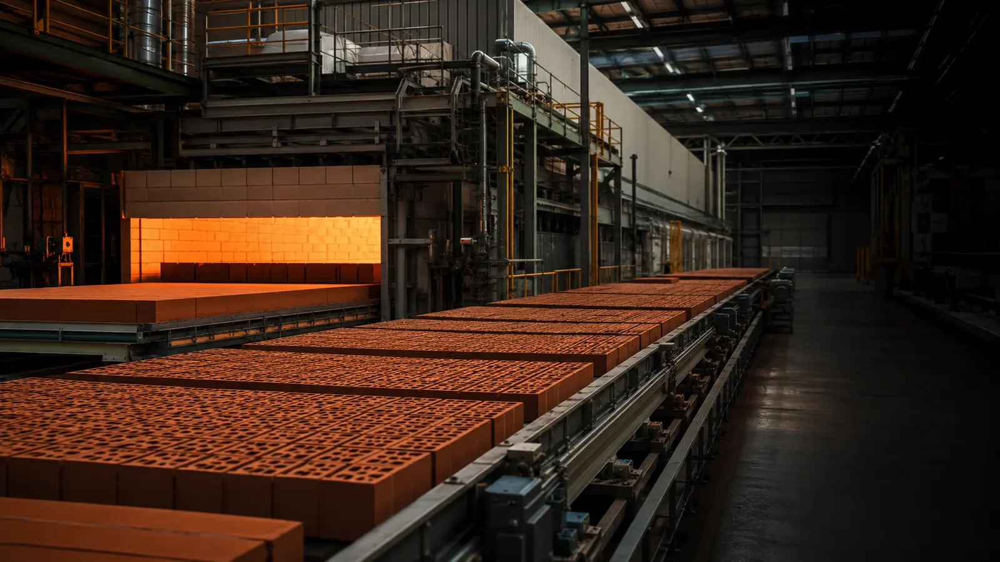
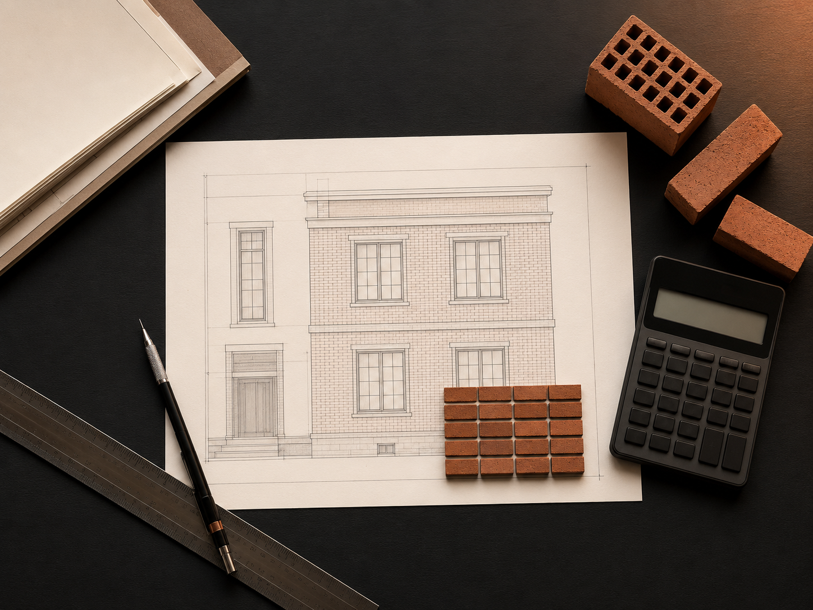

قیمت برایم مهم است
بازه قیمت را ببینید و متناسب با بودجه پروژه استعلام بگیرید.
استعلام قیمت ←از انتخاب رنگ و بافت تا برآورد تعداد و ارسال به سراسر ایران؛ مستقیم از کارخانه، با مشاوره تخصصی برای پروژه شما.

از بافتهای اصیل تا رنگهای مینیمال؛ هر مجموعه برای یک زبان معماری طراحی شده است.

مقاوم، اصیل و مناسب نمای مدرن
مشاهده مجموعه ←
بافت دستساز برای معماری ایرانی
مشاهده مجموعه ←
روشن، مینیمال و آرام
مشاهده مجموعه ←
انتخاب معاصر برای حجمهای ساده
مشاهده مجموعه ←
برای دیوار داخلی و جزئیات شاخص
مشاهده مجموعه ←
دوام بالا برای محوطه و مسیر
مشاهده مجموعه ←
انتخاب حرفهای رنگ، بافت و ابعاد برای هر پروژهبازه قیمت را ببینید و متناسب با بودجه پروژه استعلام بگیرید.
استعلام قیمت ←ترکیب رنگ، بافت و بندکشی را در پروژههای اجراشده ببینید.
دیدن پروژهها ←کد محصول و متراژ را بفرستید تا پیشفاکتور آماده شود.
شروع سفارش ←رنگ پایدار، جذب آب کنترلشده و کیفیت یکنواخت برای اجرای حرفهای.
برای قیمت روز استعلام بگیرید
مشاهده و استعلامبرای قیمت روز استعلام بگیرید
مشاهده و استعلامانتخاب درست رنگ، بافت و بندکشی، یک حجم ساده را به نمایی ماندگار تبدیل میکند.
مشاوره برای پروژه مشابهآجر نسوز پایا · دوام در گذر زمان
هویت بصری پایا از گرمای خاک و آجر، استحکام سرمهای و رنگ مسی الهام گرفته است؛ ترکیبی که همزمان حس کیفیت صنعتی و معماری معاصر را منتقل میکند.
پیش از خرید، مشخصات فنی و نیاز پروژه بررسی میشود تا انتخاب محصول صرفاً براساس ظاهر نباشد.
گفتوگو با کارشناس ←
 آماده ارسال به سراسر ایران
آماده ارسال به سراسر ایرانکنترل رنگ، ابعاد و پخت هر پارت تولید.
پیشنهاد محصول متناسب با اقلیم و سبک.
بدون واسطه و متناسب با حجم سفارش.
بستهبندی پالت و برنامهریزی حمل.

از طرح اولیه تا تولید آزمایشیبرای انتخاب ظرفیت اقتصادی، تجهیزات مناسب، چیدمان کارخانه و رسیدن به محصول قابلفروش، تجربه تولید پایا کنار سرمایهگذار و تیم فنی پروژه قرار میگیرد.
متراژ سطح و مدل آجر را وارد کنید تا برآورد اولیه با ۷٪ پرت اجرا محاسبه شود.

این عدد تقریبی است؛ نوع بندکشی و جزئیات اجرا روی مقدار نهایی اثر دارد.
دریافت برآورد دقیقشماره تماس و نوع پروژه را بفرستید؛ کارشناس فروش برای تکمیل جزئیات با شما تماس میگیرد.
قیمت به مدل، رنگ، ابعاد، حجم سفارش و محل ارسال وابسته است. برای دریافت قیمت روز، مشخصات پروژه را در فرم استعلام وارد کنید.
متراژ خالص نما را در ضریب مصرف مدل انتخابی ضرب میکنیم و معمولاً ۵ تا ۱۰ درصد پرت اجرا در نظر میگیریم.
بله؛ پس از گفتوگو با کارشناس فروش، نمونه رنگ و بافت محصول مناسب پروژه برای شما ارسال میشود.
ارسال سفارش از کارخانه به سراسر ایران و متناسب با حجم بار، با وانت، خاور یا تریلی انجام میشود.